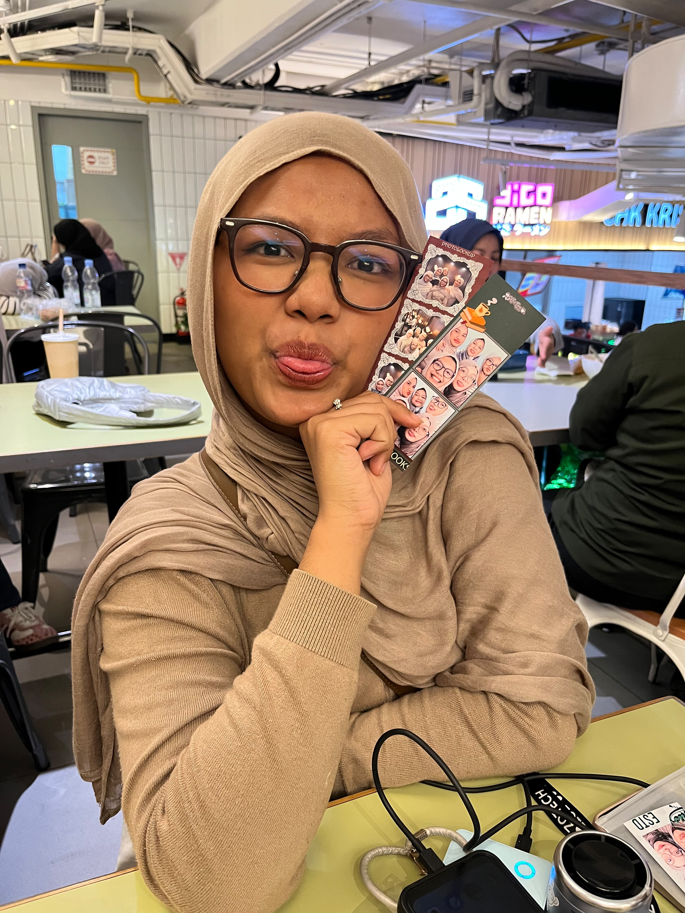
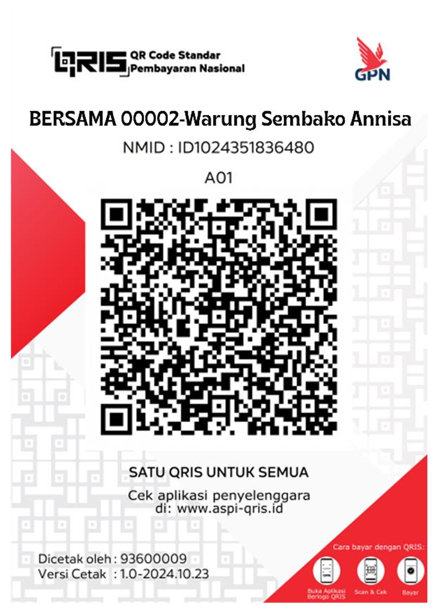

🥕
Memanfaatkan Ampas Wortel
Ampas wortel hasil pengolahan dimanfaatkan sebagai bahan dalam inovasi pasta.
“Lezat, Sehat, Peduli Bumi.”
Mengubah ampas wortel yang masih bernilai menjadi pasta kering yang menarik, praktis, dan bernilai guna.

Karena bahan yang sering dianggap sisa ternyata masih bisa jadi sesuatu yang bernilai.
Ampas wortel hasil pengolahan dimanfaatkan sebagai bahan dalam inovasi pasta.
Konsep pemanfaatan kembali membantu mengurangi bahan pangan yang terbuang.
Dibentuk menjadi pasta kering yang mudah disimpan dan diolah menjadi berbagai menu.
Menggabungkan inovasi pangan, kreativitas produk, dan konsep keberlanjutan.
Varian bentuk yang cocok untuk berbagai kreasi masakan.
Bentuk panjang dan ramping. Cocok dipadukan dengan saus tomat, saus creamy, atau tumisan.
Bentuk pendek berongga dengan permukaan yang membantu saus menempel dengan baik.
Bentuk spiral yang seru dan cocok untuk salad pasta maupun saus favorit.
Wortel segar diproses menjadi bahan pangan.
Ampas yang masih bernilai dikumpulkan dan dipersiapkan.
Ampas diolah bersama bahan pasta sesuai formulasi penelitian.
Dibentuk, dikeringkan, lalu siap dikemas dan diolah.
Isi form di bawah. Data akan langsung tersimpan di database kami.
Atau bayar via QRIS:

Ampas wortel pada CAROVAL dimanfaatkan untuk menjadi...
Bantu kami jadi lebih baik. Feedback langsung masuk ke database.
Memuat feedback...